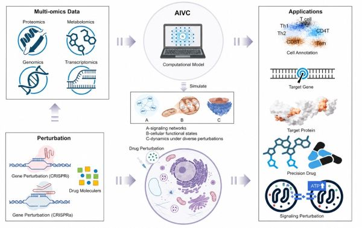

I am an associate professor at the State Key Laboratory of Virtual Reality Technology and Systems, Beihang University. Prior to this, I served as a senior research manager at SenseTime Research, where I led an R&D team in developing AI-powered medical products. I received my Ph.D. in 2018 from Beihang University under the joint supervision of Prof. Aimin Hao and Prof. Hong Qin. From 2019 to 2021, I pursued postdoctoral research at the iMoon: Intelligent Media and Cognition Lab, Tsinghua University, working with Prof. Yue Gao. My research focuses on computer graphics, computer vision, and artificial intelligence, aiming to develop computational methods that address fundamental challenges in healthcare and biomedicine.
We are looking for self-motivated students with strong CV/CG backgrounds and an interest in healthcare. Please send your CV to xiaqing[AT]buaa[DOT]edu[DOT]cn.
News
[2026-03-30] One paper on foveated ray tracing for virtual reality rendering was published in IEEE TVCG.
[2025-05-20] Our work, ECGFM, a foundation model for ECG analysis, was published in Information Fusion.
Our research integrates artificial intelligence and virtual reality, drawing on computer vision and geometric computing to model biological systems, analyze multimodal biomedical data, and understand complex anatomical structures and surgical environments. We aim to advance biomedical discovery, quantitative diagnosis, and intelligent intervention.

Virtual Organ Modeling
We develop multiscale computational models that integrate multimodal biological data from molecular to organ scales. Combining representation learning with mechanistic priors, we aim to link molecular regulation, cellular behavior, tissue organization, and organ function. We study how these models can predict genetic and pharmacological perturbation responses, uncover disease mechanisms, and support therapeutic target identification, drug discovery, and personalized treatment design.
We develop multimodal, multiscale methods connecting tissue morphology with molecular profiles, spatial omics, and clinical data to study how cellular composition, tissue organization, and spatial interactions relate to disease progression and patient outcomes. Linking whole-slide images with molecular measurements, we aim to identify biomarkers and characterize tissue phenotypes for cancer diagnosis, prognostic assessment, and evidence-grounded pathology reporting.
We develop data-efficient methods for segmenting, registering, and reconstructing anatomical structures across imaging modalities. Geometric and topological constraints preserve anatomical consistency when annotations or observations are limited. Linking local image features with global organ structure, we recover patient-specific anatomy from incomplete data to support image-based quantitative phenotyping, longitudinal disease assessment, and individualized treatment planning.
We develop geometric representations and learning methods for reconstructing, analyzing, deforming, and generating 3D shapes and dynamic scenes. Combining geometric priors with data-driven models, we capture structural relationships while preserving shape fidelity and temporal coherence. We connect shape analysis and generative modeling with motion capture and animation, and explore efficient rendering for virtual reality and interactive simulation of complex dynamic scenes.
We develop methods for perception, reconstruction, and reasoning in dynamic surgical environments. Combining scene understanding with 3D/4D reconstruction, we model patient anatomy, surgical instruments, and their interactions over time. We integrate spatiotemporal modeling with procedural understanding to relate visual observations to intervention progress, supporting virtual surgery, interactive training, intraoperative decision support, and autonomous surgical systems.
Surgical Scene Understanding · 3D/4D Scene Reconstruction · Virtual Surgery · Intraoperative Decision-Making · Autonomous Surgery
For a complete and up-to-date publication list, please visit Google Scholar or DBLP.